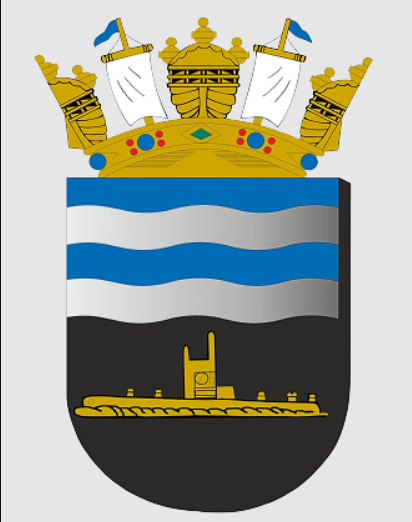
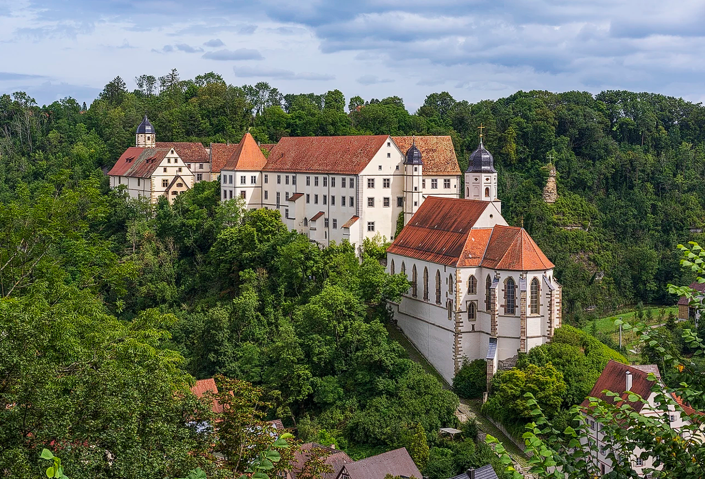

Boas-vindas à Wikipédia,
a enciclopédia livre que todos podem editar.
Artigo em destaque

A Força de Submarinos (ForSub) da Marinha do Brasil é o componente da Esquadra que organiza esses meios e suas bases navais, navios auxiliares, escolas de instrução e mergulhadores. Seus componentes operativos são quatro submarinos, um navio de socorro, um aviso e uma unidade de operações especiais, o Grupamento de Mergulhadores de Combate. Seu principal ancoradouro e sede do comando é a Ilha da Madeira, em Itaguaí, com outras instalações na Ilha de Mocanguê Grande, Niterói, ambas no estado do Rio de Janeiro. O Brasil opera submarinos desde 1914, com a classe Foca. Historicamente há uma média de quatro a cinco submarinos em serviço, com um máximo de dez em 1977–1978. Eles foram construídos no exterior até os anos 1980, quando a indústria brasileira se tornou a primeira no Hemisfério Sul a montar submarinos. (Artigo completo...)
Eventos atuais
- Na matemática, a Medalha Fields é concedida a Yu Deng, John Pardon, Jacob Tsimerman e Hong Wang (imagem).
- Carlos Vila Nova reeleito presidente de São Tomé e Príncipe.
- Espanha derrota Argentina na final da Copa do Mundo FIFA e torna-se bicampeã mundial.
- Cantora e compositora galesa Bonnie Tyler morre aos 75 anos.
- Santa Sé declara a Fraternidade Sacerdotal de São Pio X em cisma e excomunga seus membros após consagrações sem mandato pontifício.
Em andamento:
Imagem do dia

Vista do Castelo de Haigerloch e da igreja do castelo no centro histórico de Haigerloch, Baden-Württemberg, Alemanha.F